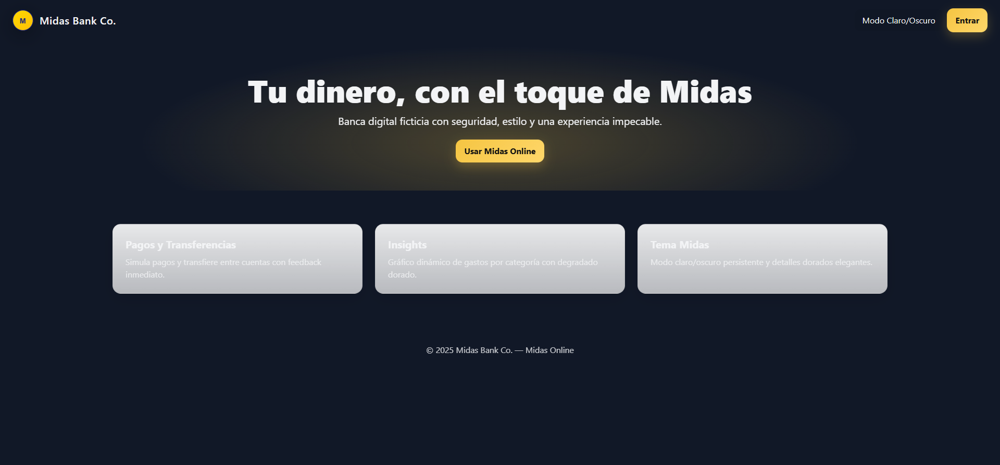
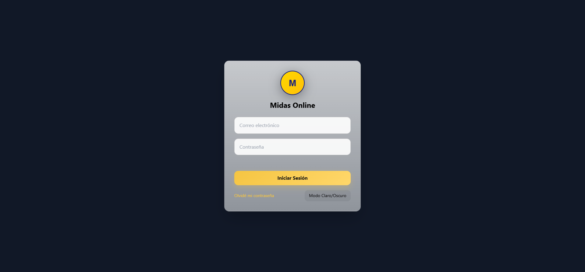
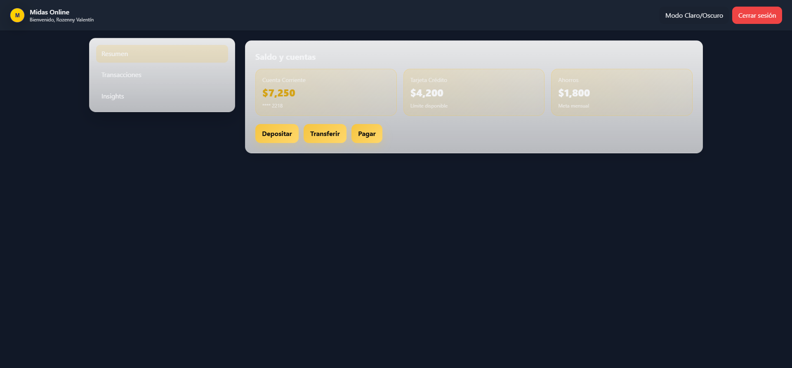
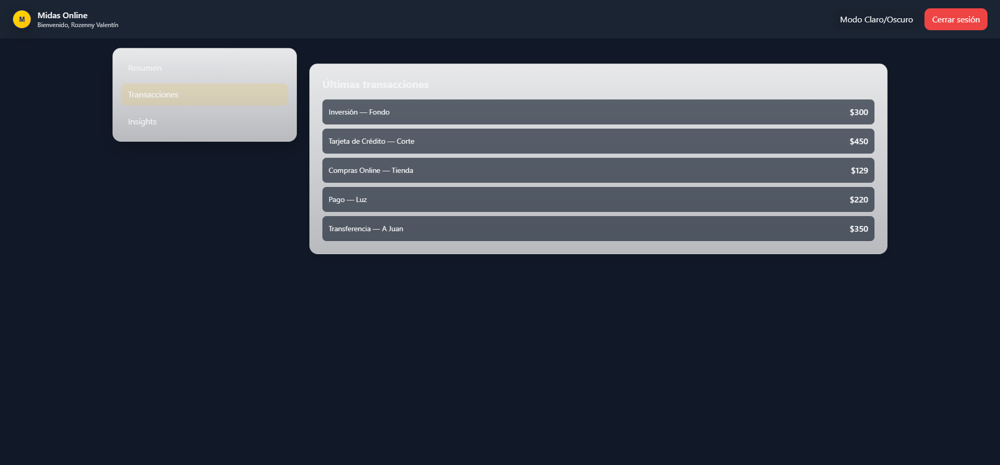
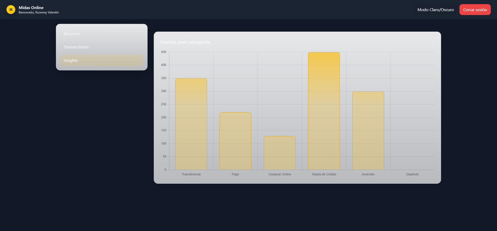

Dashboard

| Prueba | Aceptación | Rechazo |
|---|---|---|
| Login | Acceso al dashboard con credenciales válidas | Mensaje de error o fallo de acceso |
| Dashboard | Botones y gráficos visibles y funcionales | Algún botón no responde o gráficos no cargan |
| Gráficos | Información dinámica correcta en Chart.js | Gráficos no cargan o se ven mal |
| Modo Claro/Oscuro | Cambio aplicado sin romper layout | Elementos superpuestos o sin efecto |
| Cierre de sesión | Redirige a login correctamente | Sesión permanece activa o redirección falla |
| Fecha | Tipo de Prueba | Actividad |
|---|---|---|
| 13/08 | Manual | Validación de login y navegación inicial |
| 14/08 | Manual | Pruebas de dashboard y botones |
| 15/08 | Automatizada | Automatización de login, navegación y capturas |
| 16/08 | Manual/Automatizada | Pruebas de gráficos y modo claro/oscuro |
| 17/08 | Automatizada | Generación de evidencia y cierre de sesión |
| ID | Funcionalidad | Paso | Datos | Esperado |
|---|---|---|---|---|
| CP01 | Login | Abrir login.html, ingresar email/pass, click login | rozenny@example.com / 123456 | Dashboard visible |
| CP02 | Dashboard | Explorar secciones Overview, Transactions, Insights | N/A | Secciones visibles y funcionales |
| CP03 | Modo Claro/Oscuro | Activar switch de modo | N/A | Interfaz cambia correctamente |
| CP04 | Cierre de sesión | Click en logout | N/A | Redirige a login |




